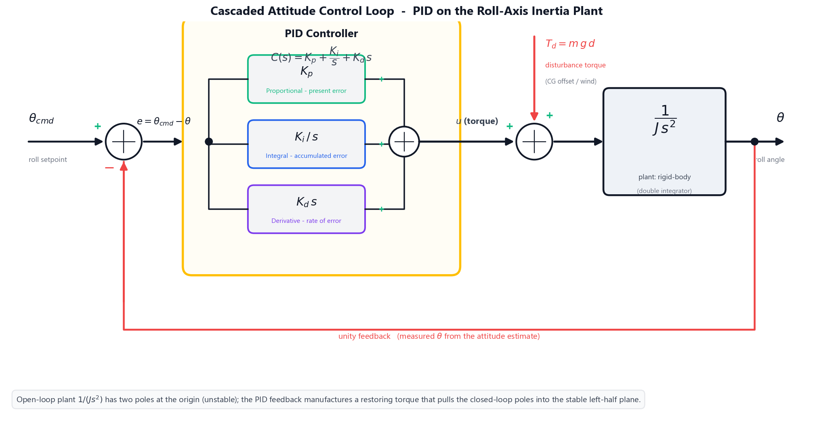
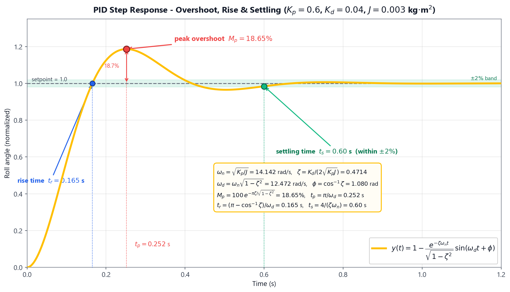
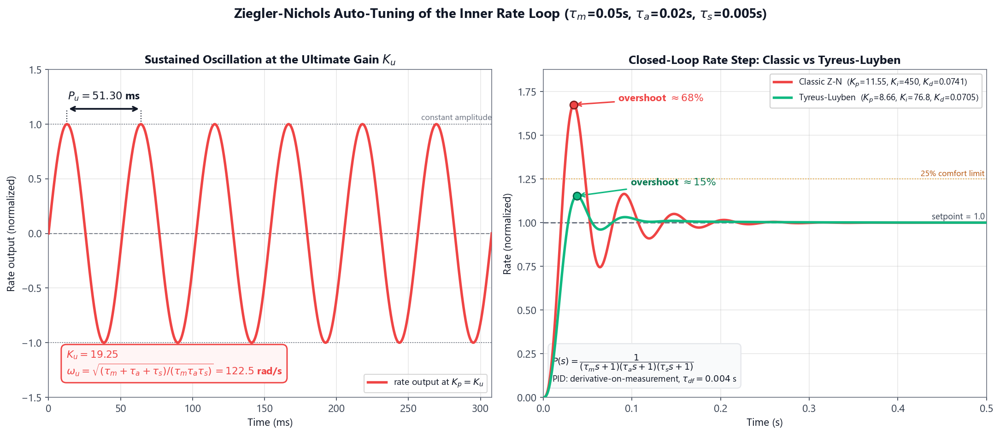
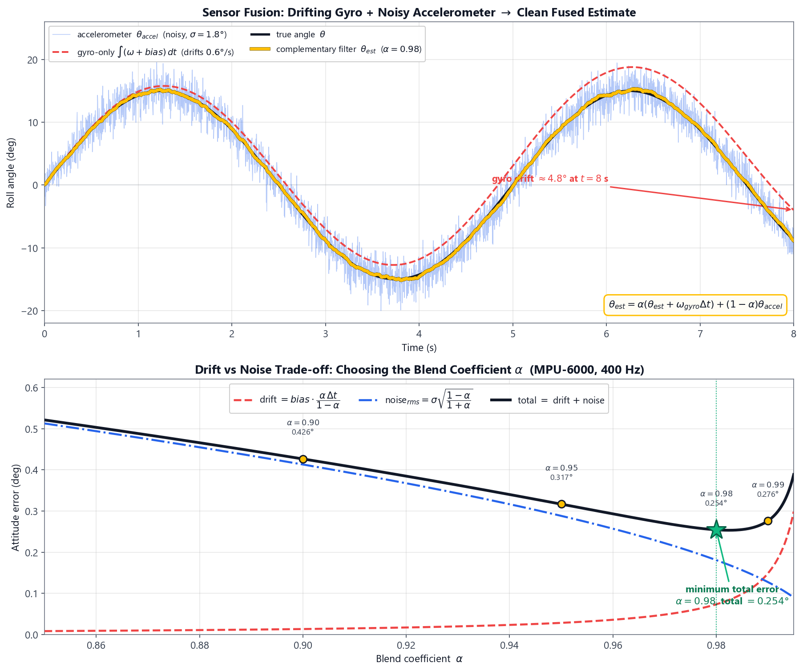

Flight Control System: PID Tuning, Ziegler–Nichols Auto-Tuning & Sensor Fusion
Theory: Flight Control — PID Tuning, Ziegler–Nichols & Sensor Fusion
A multirotor is open-loop unstable: with no active control a quadcopter cannot hold its attitude, because the smallest disturbance torque integrates unchecked into a tumble. Stable flight is therefore created entirely by the flight-control loop running on the autopilot — it reads the vehicle's attitude many hundreds of times per second, compares it with the pilot's command, and continuously trims the four motor thrusts to drive the error to zero. This experiment builds that loop from the ground up: the PID controller that generates the corrective torque, the Ziegler–Nichols procedure that gives a first set of gains automatically, and the complementary filter that fuses the gyroscope and accelerometer into the clean attitude estimate the controller depends on.
1. The Attitude Control Problem
Consider rotation about a single axis — the roll axis. Newton's second law for rotation states that the net torque equals the moment of inertia times the angular acceleration:
τ = J · θ̈
where J is the roll-axis moment of inertia [kg·m2] and θ is the roll angle [rad]. Rearranging, the angle is the double integral of the applied torque:
θ(s) / τ(s) = 1 / (J s2)
This plant — a double integrator — is the root of the instability. It has two poles at the origin, so any constant disturbance torque produces an angle that grows without bound. The controller's job is to manufacture a restoring torque that pulls the two poles into the stable left-half plane.

Real autopilots use a cascaded structure: an outer angle loop (commanding a desired angular rate from the attitude error) wrapped around an inner rate loop (commanding motor torque from the rate error). Section 2–4 analyse the angle loop's closed-loop response; Section 5–6 tune the inner rate loop with Ziegler–Nichols; Section 7 builds the attitude estimate both loops feed on.
2. The PID Controller & the Second-Order Closed Loop
The Proportional–Integral–Derivative controller forms the corrective torque from three terms of the error e = θcmd − θ:
C(s) = Kp + Ki / s + Kd s
- Proportional (Kp): torque proportional to the present error — the main restoring spring.
- Integral (Ki): torque proportional to the accumulated past error — eliminates steady offsets.
- Derivative (Kd): torque proportional to the rate of change of error — electronic damping that tames overshoot.
With proportional + derivative action on the inertia plant, the closed loop becomes the textbook second-order prototype s2 + 2ζωns + ωn2, where the two design quantities map directly onto the gains:
ωn = √(Kp / J) ζ = Kd / (2√(Kp J))
ωn is the natural frequency (how fast the loop responds) and ζ is the damping ratio (how oscillatory it is). Raising Kp speeds the loop but reduces damping; raising Kd adds damping.
Where does J come from? — the build inherited from Experiment 2
The moment of inertia is not a free parameter; it follows from the airframe you assembled. Modelling an X-quad as its four motors lumped at the arm radius L, each 45° from the roll axis (perpendicular distance L/√2):
J = 4 · (m/4) · (L/√2)2 = m L2 / 2
Worked example — roll inertia of the 5″ reference airframe. Taking the take-off mass m = 0.5 kg and arm length L = 110 mm = 0.110 m inherited from Experiment 2:
J = (0.5 × 0.1102) / 2 = (0.5 × 0.0121) / 2 = 0.00303 kg·m2 ≈ 0.003 kg·m2
Every worked example below uses this J = 0.003 kg·m2. A heavier or larger airframe raises J (the 10″ heavy-lift preset is ~16× larger), which slows the loop for the same gains.
Worked example — natural frequency and damping at the default gains. With Kp = 0.6 N·m/rad, Kd = 0.04 N·m·s/rad and J = 0.003 kg·m2:
ωn = √(0.6 / 0.003) = √200 = 14.14 rad/s
ζ = 0.04 / (2√(0.6 × 0.003)) = 0.04 / (2 × 0.04243) = 0.471
A damping ratio of 0.47 is moderately underdamped — fast, with a modest overshoot we quantify next.
3. Step-Response Metrics
When the pilot commands a step change in attitude, the closed-loop response is judged by four numbers, each a closed-form function of ωn and ζ:
| Metric | Formula | Meaning |
|---|---|---|
| Peak overshoot | Mp = 100 · e−πζ/√(1−ζ2) % | how far past the target it swings |
| Peak time | tp = π / (ωn√(1−ζ2)) | when the first peak occurs |
| Rise time | tr = (π − cos−1ζ) / (ωn√(1−ζ2)) | 0→100% of the first rise |
| Settling time (2%) | ts = 4 / (ζωn) | when it stays within ±2% |
Worked example — metrics at Kp = 0.6, Kd = 0.04. Using ωn = 14.14 rad/s and ζ = 0.471:
Mp = 100 e−π×0.471/√(1−0.4712) = 100 e−1.680 = 18.65 %
tp = π / (14.14 × 0.882) = 0.252 s tr = 0.165 s ts = 4 / (0.471 × 14.14) = 0.60 s

The Kp-overshoot trade-off
Holding Kd = 0.04 fixed and sweeping Kp reveals the central tuning tension — more proportional gain is faster but rings harder:
| Kp | ωn (rad/s) | ζ | Overshoot | Settling ts |
|---|---|---|---|---|
| 0.2 | 8.16 | 0.816 | 1.18 % | 0.60 s |
| 0.4 | 11.55 | 0.577 | 10.85 % | 0.60 s |
| 0.6 | 14.14 | 0.471 | 18.65 % | 0.60 s |
| 0.8 | 16.33 | 0.408 | 24.54 % | 0.60 s |
| 1.0 | 18.26 | 0.365 | 29.16 % | 0.60 s |
Overshoot climbs past the 25% comfort limit near Kp = 0.8. A subtle but important result: the settling time is constant at 0.60 s across the whole sweep, because the decay rate ζωn = Kd/(2J) = 0.04/(2×0.003) = 6.67 s−1 depends only on Kd and J, not on Kp. To settle faster you must raise the derivative gain, not the proportional gain.
4. Steady-State Error & the Role of Integral Action
A perfectly trimmed quad still tilts under a constant disturbance torque — an off-centre payload, a shifted battery, or a steady crosswind. A horizontal centre-of-gravity offset d under gravity creates the couple:
τd = m · g · d
With proportional control alone, the loop can only hold a counter-torque by accepting a permanent angle error — the steady-state error:
ess = τd / Kp
Worked example — droop from the Experiment-2 CG offset. The CG offset measured in Experiment 2 is d = 3.57 mm, so on the 0.5 kg airframe:
τd = 0.5 × 9.807 × 0.00357 = 0.0175 N·m
The resulting steady tilt shrinks as Kp rises:
Kp ess (rad) ess (deg) 0.2 0.0875 5.01° 0.6 0.0292 1.67° 1.0 0.0175 1.00° Higher Kp reduces the droop but, from Section 3, worsens overshoot — you cannot win on both with proportional gain alone.
The escape is the integral term. Because Ki/s keeps accumulating as long as any error remains, it injects an ever-growing counter-torque until the error is driven to exactly zero. Adding even a small Ki nulls the steady-state tilt while Kp and Kd set the transient — the reason every real attitude loop is a full PID, not just PD.
5. Ziegler–Nichols Auto-Tuning
Choosing three gains by hand is tedious. The Ziegler–Nichols ultimate-cycle method finds a starting set from a single experiment: raise the proportional gain until the loop oscillates with constant amplitude; record that gain as the ultimate gain Ku and the oscillation period as the ultimate period Pu; then read the gains from a table.
Why the method needs the real plant lags
A pure inertia plant 1/(J s2) under proportional control has its poles sitting exactly on the imaginary axis at every gain — it oscillates at all Kp, so Ku is undefined. The ultimate-gain method only works because the real inner rate loop carries additional first-order lags: the rotational/mechanical lag τm, the motor + ESC actuator lag τa, and the gyro/filter lag τs. The rate-loop plant is therefore a Type-0 chain:
P(s) = 1 / [(τms + 1)(τas + 1)(τss + 1)]
Routh's criterion on this third-order loop gives closed-form crossing conditions:
ωu = √[ (τm+τa+τs) / (τmτaτs) ] Pu = 2π / ωu
Ku = [ (τmτa + τmτs + τaτs)(τm+τa+τs) / (τmτaτs) − 1 ] / K
Worked example — ultimate gain and period (5″ airframe). With τm = 0.05 s, τa = 0.02 s, τs = 0.005 s and unit DC gain:
ωu = √(0.075 / 5×10−6) = √15000 = 122.5 rad/s → Pu = 2π/122.5 = 0.0513 s
Ku = (0.00135 × 0.075 / 5×10−6) − 1 = 20.25 − 1 = 19.25
The classic Ziegler–Nichols PID table then prescribes:
Kp = 0.6 Ku Ti = 0.5 Pu Td = 0.125 Pu
with Ki = Kp/Ti and Kd = KpTd.
Worked example — classic Z-N gains.
Kp = 0.6 × 19.25 = 11.55 Ki = 11.55 / (0.5×0.0513) = 450.3 Kd = 11.55 × (0.125×0.0513) = 0.0741
6. Refining the Tune — Classic vs Robust
Ziegler–Nichols is fast, but it is deliberately aggressive: the classic table targets a quarter-amplitude decay, which on this plant produces a large first overshoot.
Observed in the simulation — classic Z-N step response. Applying Kp = 11.55, Ki = 450.3, Kd = 0.074 to the rate loop gives roughly 68% overshoot with zero steady-state error — fast, but far past the 25% comfort limit. (Note: a widely repeated claim that classic Z-N yields ~20% overshoot is incorrect for this kind of plant; the honest simulated value is reported here.)
The practical workflow is to treat Z-N as a starting point and then detune for robustness. The classic table's overshoot comes mostly from its very high integral gain (Ti = 0.5Pu). The Tyreus–Luyben table raises Ti and lowers Kp:
Kp = 0.45 Ku Ti = 2.2 Pu Td = Pu / 6.3
Worked example — Tyreus–Luyben gains and response.
Kp = 0.45 × 19.25 = 8.66 Ki = 8.66 / (2.2×0.0513) = 76.8 Kd = 8.66 × (0.0513/6.3) = 0.0705
The integral gain drops from 450 to 77 — a much gentler integrator. The simulated step now overshoots about **15%** (under the 25% target) while keeping zero steady-state error. The cost is a slightly slower rise; the benefit is a calm, robust loop.

7. Sensor Fusion — the Complementary Filter
Both control loops depend on a clean attitude measurement, but neither inertial sensor gives one alone:
- The gyroscope measures angular rate; integrating it gives a smooth, low-noise angle that drifts because the small constant bias accumulates without bound.
- The accelerometer measures the gravity direction, giving an absolute tilt that does not drift but is buried in vibration noise.
The complementary filter fuses them — a high-pass on the gyro path and a low-pass on the accel path that sum to unity:
θest = α · (θest,prev + ωgyro · Δt) + (1 − α) · θaccel
The single blending coefficient α sets the crossover time constant, and through it the two competing error sources:
τf = α · Δt / (1 − α)
drift = bias · τf noiserms = σaccel · √[(1 − α) / (1 + α)]
A higher α trusts the gyro longer (more drift, less noise); a lower α trusts the accelerometer more (less drift, more noise). The best α minimises the combined error.
Worked example — choosing α for the reference IMU. With a gyro bias of 0.6°/s, accelerometer angle noise σ = 1.8°, and the estimator at Δt = 2.5 ms (400 Hz):
α τf (s) drift (°) noise (°) total (°) 0.90 0.0225 0.014 0.413 0.426 0.95 0.0475 0.029 0.288 0.317 0.98 0.1225 0.074 0.181 0.254 0.99 0.2475 0.149 0.128 0.276 The total error is smallest at α = 0.98. For contrast, pure gyro integration (α = 1) drifts by 0.6°/s × 30 s = 18° after just half a minute — the unbounded error the accelerometer reference exists to stop.

Modelling Assumptions & Limitations
- Lumped inertia is an upper bound. J = m L2/2 assumes all mass sits at the motor positions. Real builds carry the battery and stack near the centre, so the true inertia is somewhat lower and the loop is a little faster than predicted.
- The prototype 2nd-order model is idealised. The metric formulas of Section 3 neglect the zero introduced by the PD term and the extra phase lag of the actuator, both of which add a little real-world overshoot beyond the table values.
- Classic Ziegler–Nichols is intentionally aggressive. It targets quarter-amplitude decay, not a gentle response — hence the ~68% overshoot. It is a starting point to be refined (Section 6), not a final tune.
- The complementary filter assumes a constant gyro bias. Real bias wanders slowly with temperature, so a fixed α is itself a compromise; production systems re-estimate the bias online (a Kalman filter generalises exactly this fusion).
- Single-axis analysis. Roll, pitch and yaw are treated independently here; a real airframe has small cross-axis coupling that a full controller accounts for.